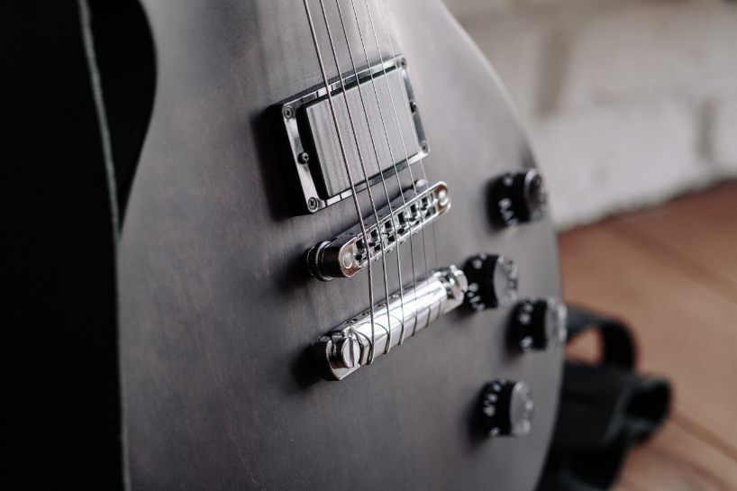
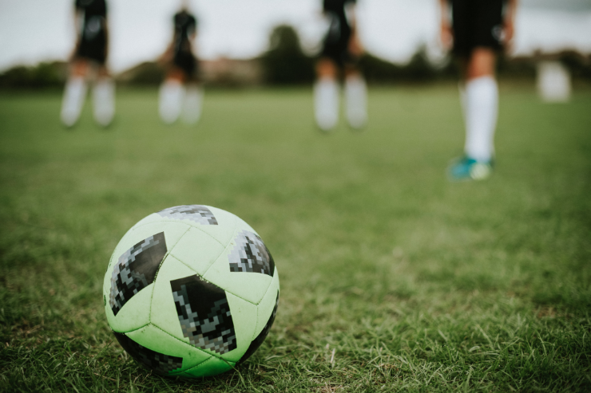

Chess
I started playing chess when I was 12 years old. But I got my first discharge at the age of 18. I was never seriously interested in chess, but I was always interested in playing it. This game makes me move my brain and look for various ways out of the situation.
I even remember how once losing to my classmate, I took revenge from him two days later. I won because I studied openings and tactics all these two days.
Great feelings.
You can also play a game with me on chess.com, I am always happy to play a game with someone who understands this.

Programming
I became interested in programming when I entered university. Until that time, I was familiar with computers only to play games in it.
My favorite programming language is Python, and most of all I like (or rather, the most that I can) it is to create web applications. It doesn’t matter backend or frontend.
My favorite pastime in programming is finding the right and best algorithm for solving the problem. In the near future I want to participate in competitions such as ICPC, and prove myself there.
Music
I have minor health problems - I hear hard. But that does not stop me from succeeding in the music field. I have been playing the guitar and singing for almost 6 years.
On my last Instagram account, where I posted my covers, there were about 1200 subscribers when I was 16 years old.
It all started with the fact that my mother told me that I can’t sing, and it broke my heart. But thanks to my warlike character, I did not give up and showed myself after 4 years.
And anyway, I still love you, mom.

